Case Studies - not finished
Wouter van Amsterdam
2017-11-10
Last updated: 2017-11-10
Code version: 6009627
NB Not finished
Please note that this is hasty work, most of the assignments are not thoroughly answered.
Instructions
Use the morning to examine the datasets for the case studies. For each case: 1. get the appropriate descriptive statistics; 2. form an analysis plan; 3. try to develop a sense (“gut feeling”) of what the results of the analysis will be; and 4. if you have time, perform a full analysis on at least one case.
Remember the “Steps of Data Analysis” presented on the first day of the course!
You may work on your own or in a group, at your own computer or at the scheduled location, or in one of the computer rooms (if available) or in ‘Studielandschap’. Note that there is no assistance available during the morning.
During the lecture (13.30 to 17.00 at the very latest) we will discuss the analysis of the cases. There will also be plenty of time for you to ask questions.
The Case Studies
Case Study 1: fruitflies
For female fruitflies it is known that increased reproduction leads to a shortened life span. For male fruitflies this has never been ascertained. Male fruitflies that mate on average once a day are known to live for 60 days. The question is whether manipulation of sexual activity influences life span. To answer this question the following experiment was done: For one specific species of fruitflies, sexual activity was manipulated by providing individual males with either one or eight receptive, virginal females per day. Further, individual males were provided with one or eight recently inseminated females (these females do not wish to be inseminated again). A number of males were kept solitarily. Relevant variables were coded as follows: The data are given in the file fruitfly.sav or fruitfly.RData
| variable | explanation |
|---|---|
| number | number of females provided |
| type | type of company (0: recently inseminated, 1: virginal, 9: none) |
| day | day=0 if life span is shorter than 60 days, day=1 if life span is longer than 60 days |
| thorax | thorax length of male |
| sleep | average percentage of time spent sleeping per day |
Research objective
Answer the question: do male fruitflies have a shorte life span when they reproduce more?
Variables of interest
- determinant: number AND type
- outcome: day
- possible confounders: thorax, sleep
Number and type will be included, as they will together determine how many times a male fruitfly may reproduce. Thorax and sleep are included, because both could be related to the outcome, and possibly the determinant.
Data exploration
load(epistats::fromParentDir("data/fruitfly.RData"))
str(fruitfly)'data.frame': 125 obs. of 5 variables:
$ NUMBER: num 0 0 0 0 0 0 0 0 0 0 ...
$ TYPE : Factor w/ 3 levels "recently inseminated",..: 3 3 3 3 3 3 3 3 3 3 ...
$ DAY : Factor w/ 2 levels "shorter than 60 days",..: 1 1 1 1 1 1 2 1 1 2 ...
$ THORAX: num 0.64 0.7 0.72 0.72 0.72 0.76 0.78 0.8 0.84 0.84 ...
$ SLEEP : num 18 6 19 7 16 13 35 2 35 6 ...Data curation
Number is coded as numeric. However, it only has two distinct values: 0 and 8. It may be better to recode this as a categorical variable.
table(fruitfly$NUMBER)
0 1 8
25 50 50 # fruitfly$NUMBER <- factor(fruitfly$NUMBER)Pairs plot
require(GGally)
GGally::ggpairs(fruitfly)
From this exploratory analysis we can observe Day seems to be associated with thorax, and maybe with number and type too.
The distribution of thorax is a little left-skewed, while sleep is somewhat right-skewed.
Analysis plan
Day is a binary outcome, we are interested in the rate of Day > 60. For univariate analysis, we can create a contingency table and perform a chi-squared test, for multivariate analysis we can use logistic regression. As this is an etiologic question, we will include all possible confounders in the multiple regression model. We expect that type may modify the effect of number (as this determines the number of available mates), so we will include an interaction term with type and number.
Other possibility: recode number and type into 5 groups, do chi-squared
Interpretation of results
Crude analysis
tab <- xtabs(~NUMBER+DAY, data = fruitfly)
tab DAY
NUMBER shorter than 60 days longer than 60 days
0 11 14
1 23 27
8 32 18prop.table(tab, margin = 1) DAY
NUMBER shorter than 60 days longer than 60 days
0 0.44 0.56
1 0.46 0.54
8 0.64 0.36chisq.test(tab)
Pearson's Chi-squared test
data: tab
X-squared = 4.2212, df = 2, p-value = 0.1212In crude analysis, there seems to be no statistically significant association between day and number.
Multiple regression
fit <- glm(DAY~NUMBER*TYPE+THORAX+SLEEP, data = fruitfly, family = binomial)
fit_scaled <- glm(DAY~NUMBER*TYPE+scale(THORAX, center = T, scale = T)+SLEEP, data = fruitfly, family = binomial)
fit_parsimonious <- glm(DAY~NUMBER*TYPE, data = fruitfly, family = binomial)
summary(fit)
Call:
glm(formula = DAY ~ NUMBER * TYPE + THORAX + SLEEP, family = binomial,
data = fruitfly)
Deviance Residuals:
Min 1Q Median 3Q Max
-2.05883 -0.49334 -0.06449 0.67281 2.08158
Coefficients: (1 not defined because of singularities)
Estimate Std. Error z value Pr(>|z|)
(Intercept) -18.04235 3.97107 -4.543 5.53e-06 ***
NUMBER 0.18537 0.11444 1.620 0.10527
TYPEvirginal -0.31544 0.81062 -0.389 0.69718
TYPEnone -0.33237 0.77118 -0.431 0.66648
THORAX 22.82644 4.73746 4.818 1.45e-06 ***
SLEEP -0.02389 0.01449 -1.649 0.09917 .
NUMBER:TYPEvirginal -0.63327 0.20464 -3.095 0.00197 **
NUMBER:TYPEnone NA NA NA NA
---
Signif. codes: 0 '***' 0.001 '**' 0.01 '*' 0.05 '.' 0.1 ' ' 1
(Dispersion parameter for binomial family taken to be 1)
Null deviance: 172.89 on 124 degrees of freedom
Residual deviance: 100.82 on 118 degrees of freedom
AIC: 114.82
Number of Fisher Scoring iterations: 6summary(fit_parsimonious)
Call:
glm(formula = DAY ~ NUMBER * TYPE, family = binomial, data = fruitfly)
Deviance Residuals:
Min 1Q Median 3Q Max
-1.5096 -1.1436 -0.2857 1.0108 2.5373
Coefficients: (1 not defined because of singularities)
Estimate Std. Error z value Pr(>|z|)
(Intercept) 0.355707 0.470573 0.756 0.44971
NUMBER 0.049758 0.084575 0.588 0.55631
TYPEvirginal 0.006823 0.672310 0.010 0.99190
TYPEnone -0.114545 0.619497 -0.185 0.85331
NUMBER:TYPEvirginal -0.492331 0.177963 -2.766 0.00567 **
NUMBER:TYPEnone NA NA NA NA
---
Signif. codes: 0 '***' 0.001 '**' 0.01 '*' 0.05 '.' 0.1 ' ' 1
(Dispersion parameter for binomial family taken to be 1)
Null deviance: 172.89 on 124 degrees of freedom
Residual deviance: 142.31 on 120 degrees of freedom
AIC: 152.31
Number of Fisher Scoring iterations: 5lmtest::lrtest(fit)Likelihood ratio test
Model 1: DAY ~ NUMBER * TYPE + THORAX + SLEEP
Model 2: DAY ~ 1
#Df LogLik Df Chisq Pr(>Chisq)
1 7 -50.411
2 1 -86.447 -6 72.073 1.535e-13 ***
---
Signif. codes: 0 '***' 0.001 '**' 0.01 '*' 0.05 '.' 0.1 ' ' 1drop1(fit)Single term deletions
Model:
DAY ~ NUMBER * TYPE + THORAX + SLEEP
Df Deviance AIC
<none> 100.82 114.82
THORAX 1 141.07 153.07
SLEEP 1 103.75 115.75
NUMBER:TYPE 1 113.88 125.88Longevity can partly be explained by the provided model. The length of the male (THORAX) seems to by the most important factor, fruitflies that are longer seem to live longer.
Number on itself is not significantly associated with the outcome. However from the interaction term, we see that the number of virginal female fruitflies is associated with shorter survival. Sleep does not seem to contribute significantly to the model.
Conclusions
Male fruitlies that reproduce more often seem to have a shorter life-span. However, the size of the thorax of the fruitfly is a more important predictor, with larger fruitflies living longer.
Case Study 2, Heroin rehab clinic
Caplehorn (1991) was interested in factors that have an effect on the success probability of retention of heroin addicts in a clinic. In a multi-center study he collected the following data from 238 heroin addicts. The data are given in the file heroin.sav or heroin.RData.
| variable | explanation |
|---|---|
| ID | Identification code |
| CLINIC | Number of clinic (1 or 2) |
| STATUS | Status (0=not (yet) departed; 1= departed from clinic) |
| TIMES | Time in days that heroin addicts spent in the clinic |
| PRISON | Prison record (1=yes; 0=no) |
| DOSE | Methadone dosage in mg/day |
(Source: Caplehorn J., 1991, Methadone dosage and retention of patients in maintenance treatment, Medical Journal of Australia, 154, 195 99)
The researchers are only interested in the effect of each explanatory variable separately. Would you advise further statistical analysis?
Research objective
Research question
What factors are associated with retention of heroin addicts in a clinic.
Variables of interest
- determinants: CLINIC, TIMES, PRISON, DOSE
- outcome: STATUS
- possible confounders:
Data exploration
load(epistats::fromParentDir("data/heroin.RData"))
str(heroin)'data.frame': 238 obs. of 6 variables:
$ ID : num 1 2 3 4 5 6 7 8 9 10 ...
$ CLINIC: num 1 1 1 1 1 1 1 1 1 1 ...
$ STATUS: num 1 1 1 1 1 1 1 0 1 1 ...
$ TIMES : num 428 275 262 183 259 714 438 796 892 393 ...
$ PRISON: num 0 1 0 0 1 0 1 1 0 1 ...
$ DOSE : num 50 55 55 30 65 55 65 60 50 65 ...Data curation
Let’s throw out ID, since it is uninformative and throwing it out means that we don’t have to do that each time in the analysis
Clinic, status and prison should be coded as factor variables
heroin$ID <- NULL
require(dplyr)
heroin <- heroin %>%
mutate_at(.vars = c("CLINIC", "STATUS", "PRISON"), factor)
str(heroin)'data.frame': 238 obs. of 5 variables:
$ CLINIC: Factor w/ 2 levels "1","2": 1 1 1 1 1 1 1 1 1 1 ...
$ STATUS: Factor w/ 2 levels "0","1": 2 2 2 2 2 2 2 1 2 2 ...
$ TIMES : num 428 275 262 183 259 714 438 796 892 393 ...
$ PRISON: Factor w/ 2 levels "0","1": 1 2 1 1 2 1 2 2 1 2 ...
$ DOSE : num 50 55 55 30 65 55 65 60 50 65 ...Pairs plot
require(ggplot2)
GGally::ggpairs(heroin)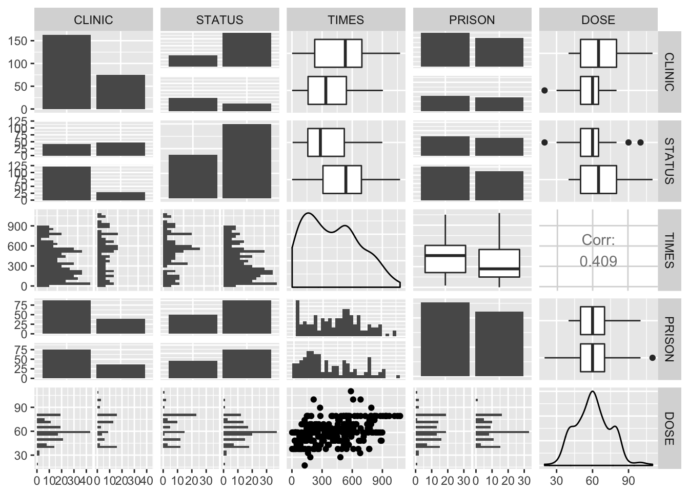
Satus seems to be related with times, clinic, and maybe prison. However, clinic and times also seem to be related, so it could be that one of them explains the effect of the other. Also, TIMES and DOSE seem to be associated with each other.
Analysis plan
We will use multiple logistic-regression analysis, as the effect of any single factor (or lack thereof) may be confounded by other factors.
Better plan: treat as survival data, predict how long they stay
require(survival)Loading required package: survivalsurv_obj <- Surv(time = heroin$TIMES, event = heroin$STATUS)
km_fit <- survfit(Surv(time = TIMES, event = STATUS==1)~1, data = heroin)
plot(km_fit)
lines(survfit(Surv(time = TIMES, event = STATUS==1)~CLINIC, data = heroin),
main = "retention by clinic", col = c("red", "blue"))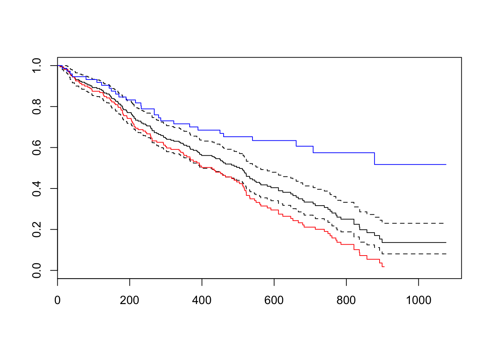
plot(survfit(Surv(time = TIMES, event = STATUS==1)~CLINIC, data = heroin),
main = "retention by prison", col = c("red", "blue"))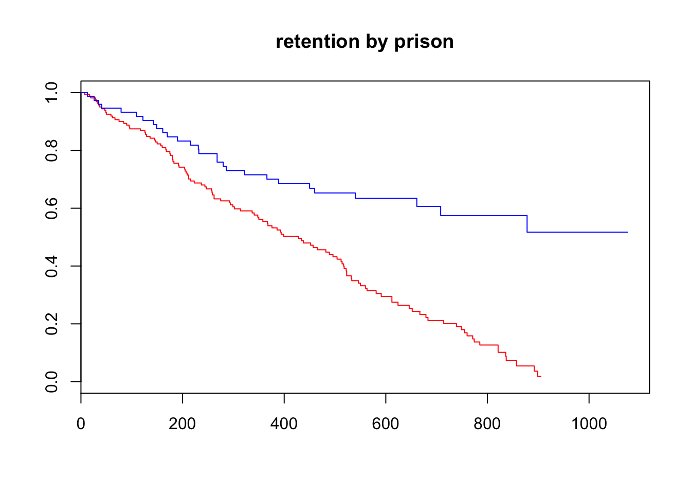
plot(survfit(Surv(time = TIMES, event = STATUS==1)~epistats::quant(DOSE), data = heroin),
main = "retention by quantiles of dose", lty = 1:4)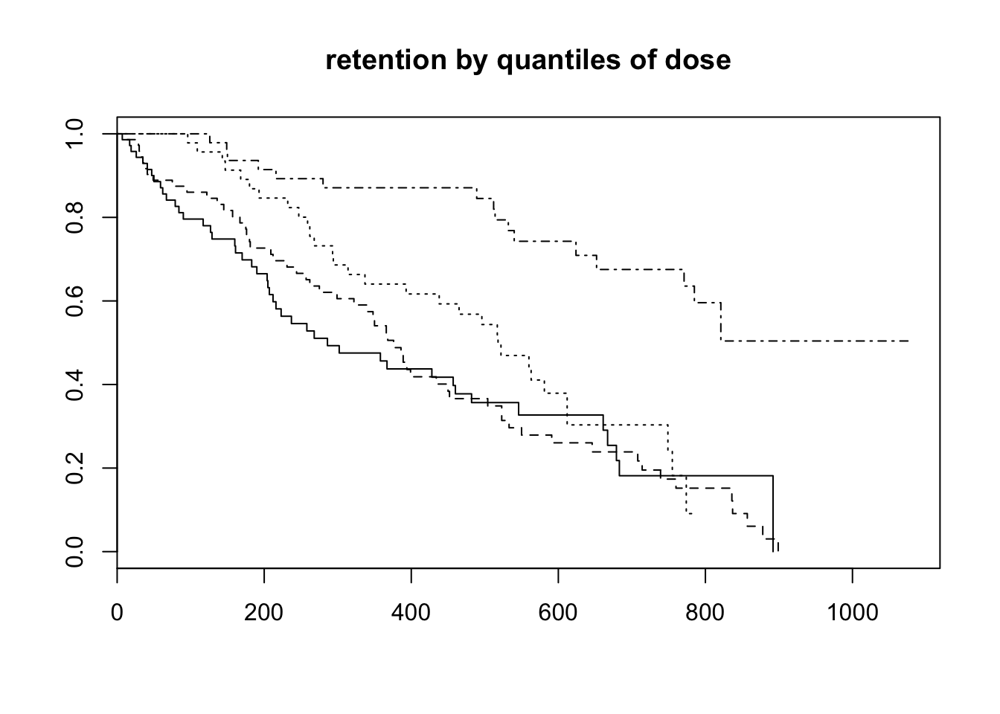
cox_fit <- coxph(Surv(time = TIMES, event = STATUS==1)~CLINIC+PRISON+DOSE, data = heroin)
summary(cox_fit)Call:
coxph(formula = Surv(time = TIMES, event = STATUS == 1) ~ CLINIC +
PRISON + DOSE, data = heroin)
n= 238, number of events= 150
coef exp(coef) se(coef) z Pr(>|z|)
CLINIC2 -1.009896 0.364257 0.214889 -4.700 2.61e-06 ***
PRISON1 0.326555 1.386184 0.167225 1.953 0.0508 .
DOSE -0.035369 0.965249 0.006379 -5.545 2.94e-08 ***
---
Signif. codes: 0 '***' 0.001 '**' 0.01 '*' 0.05 '.' 0.1 ' ' 1
exp(coef) exp(-coef) lower .95 upper .95
CLINIC2 0.3643 2.7453 0.2391 0.5550
PRISON1 1.3862 0.7214 0.9988 1.9238
DOSE 0.9652 1.0360 0.9533 0.9774
Concordance= 0.665 (se = 0.026 )
Rsquare= 0.238 (max possible= 0.997 )
Likelihood ratio test= 64.56 on 3 df, p=6.228e-14
Wald test = 54.12 on 3 df, p=1.056e-11
Score (logrank) test = 56.32 on 3 df, p=3.598e-12We can use logrank test for 2 groups
Crude analysis
Multiple regression
Interpretation of results
Conclusions
Case Study 3, Maternal mortality rates
Researchers examined maternal mortality rates (MMRs) in relation to the global distribution of physicians and nurses. A UN database on 155 countries was constructed in order to determine whether MMRs were related to the proportion of births attended by medical and nonmedical staff (defined as “attendance at birth by trained personnel” (physicians, nurses, midwives or primary health care workers trained in midwifery skills), the ratio of physicians and nurses to the population, female literacy and gross national product (GNP) per capita. The data are given in the file maternalmort.sav or maternalmort.RData.
| variable | explanation |
|---|---|
| Country | name of country |
| Physician | physicians per 1000 population |
| Nurses | nurses per 1000 population |
| GNP | gross national product per capita in dollars |
| MMR | maternal mortality rate (per 100,000 births) |
| Attended | births attended by trained personnel (%) |
| Femlit | female literacy (%) |
Research objective
Research question
What is the relationship between the proportion of births attended by trained medical staff and maternal mortality rates, adjusted for gross national product per capita and female literacy
Variables of interest
- determinant: Attended
- outcome: MMR
- possible confounders: Physician, Nurses, GNP, Femlit
Data exploration
load(epistats::fromParentDir("data/maternalmort.RData"))
str(maternalmort)'data.frame': 152 obs. of 7 variables:
$ Country : Factor w/ 152 levels "Afghanistan",..: 1 2 3 4 5 6 7 8 9 10 ...
$ physician: num 0.1 1.4 0.8 0.07 0.9 2.7 3.1 2.2 2.6 3.9 ...
$ nurses : num 0.1 4.7 3.2 16.4 4.8 2.1 6.4 8.5 8.4 10.8 ...
$ GNP : num 280 670 1600 700 6770 ...
$ MMR : num 1700 65 160 1500 NA 100 50 9 10 22 ...
$ attended : num 9 99 77 15 NA 97 NA 100 100 NA ...
$ femlit : num 15 NA 49 29 NA 96 98 NA NA 96 ...Data curation
Pairs plot
GGally::ggpairs(maternalmort[, -1])Warning: Removed 6 rows containing non-finite values (stat_density).Warning in (function (data, mapping, alignPercent = 0.6, method =
"pearson", : Removed 9 rows containing missing valuesWarning in (function (data, mapping, alignPercent = 0.6, method =
"pearson", : Removed 6 rows containing missing valuesWarning in (function (data, mapping, alignPercent = 0.6, method =
"pearson", : Removed 15 rows containing missing valuesWarning in (function (data, mapping, alignPercent = 0.6, method =
"pearson", : Removed 41 rows containing missing valuesWarning in (function (data, mapping, alignPercent = 0.6, method =
"pearson", : Removed 44 rows containing missing valuesWarning: Removed 9 rows containing missing values (geom_point).Warning: Removed 6 rows containing non-finite values (stat_density).Warning in (function (data, mapping, alignPercent = 0.6, method =
"pearson", : Removed 6 rows containing missing valuesWarning in (function (data, mapping, alignPercent = 0.6, method =
"pearson", : Removed 15 rows containing missing valuesWarning in (function (data, mapping, alignPercent = 0.6, method =
"pearson", : Removed 41 rows containing missing valuesWarning in (function (data, mapping, alignPercent = 0.6, method =
"pearson", : Removed 44 rows containing missing valuesWarning: Removed 6 rows containing missing values (geom_point).
Warning: Removed 6 rows containing missing values (geom_point).Warning in (function (data, mapping, alignPercent = 0.6, method =
"pearson", : Removed 9 rows containing missing valuesWarning in (function (data, mapping, alignPercent = 0.6, method =
"pearson", : Removed 35 rows containing missing valuesWarning in (function (data, mapping, alignPercent = 0.6, method =
"pearson", : Removed 38 rows containing missing valuesWarning: Removed 15 rows containing missing values (geom_point).
Warning: Removed 15 rows containing missing values (geom_point).Warning: Removed 9 rows containing missing values (geom_point).Warning: Removed 9 rows containing non-finite values (stat_density).Warning in (function (data, mapping, alignPercent = 0.6, method =
"pearson", : Removed 35 rows containing missing valuesWarning in (function (data, mapping, alignPercent = 0.6, method =
"pearson", : Removed 38 rows containing missing valuesWarning: Removed 41 rows containing missing values (geom_point).
Warning: Removed 41 rows containing missing values (geom_point).Warning: Removed 35 rows containing missing values (geom_point).
Warning: Removed 35 rows containing missing values (geom_point).Warning: Removed 35 rows containing non-finite values (stat_density).Warning in (function (data, mapping, alignPercent = 0.6, method =
"pearson", : Removed 52 rows containing missing valuesWarning: Removed 44 rows containing missing values (geom_point).
Warning: Removed 44 rows containing missing values (geom_point).Warning: Removed 38 rows containing missing values (geom_point).
Warning: Removed 38 rows containing missing values (geom_point).Warning: Removed 52 rows containing missing values (geom_point).Warning: Removed 38 rows containing non-finite values (stat_density).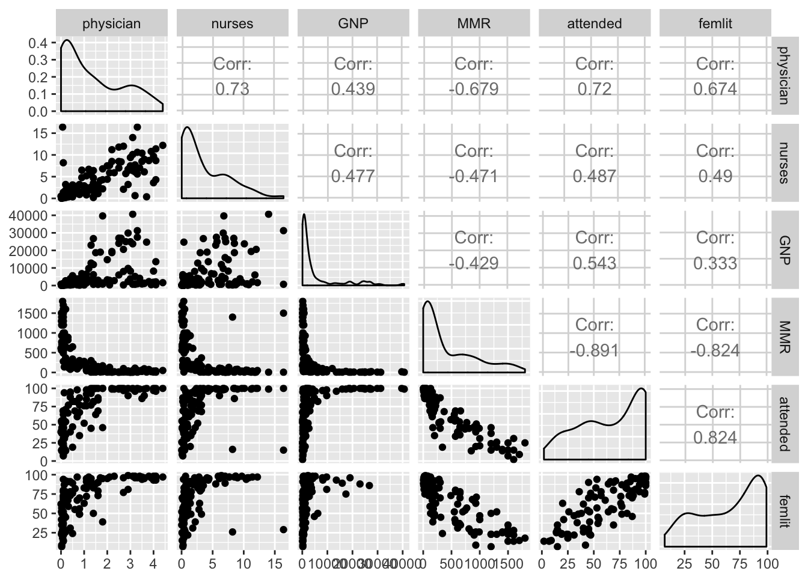
require(dplyr)
maternalmort %>%
mutate_at(.vars = c("physician", "nurses", "GNP"), function(x) log(x+.01)) %>%
select(-Country) %>%
GGally::ggpairs()Looks like strong collinearity for attended and femlit
Analysis plan
We are trying to model a continous variable: MMR. Strictly speaking it is a rate, which should optimally be modeled with Poisson regression, however we do not have the original counts. However for large enough rates, the poisson distribution opproximates the normal distribution, so we can also use (multiple) linear regression.
Crude analysis
Multiple regression
fit1 <- maternalmort %>%
mutate_at(.vars = c("physician", "nurses", "GNP"),
function(x) log(x + 0.01)) %>%
select(-Country) %>%
lm(MMR~., data = .)
plot(fit1, which = c(1,2))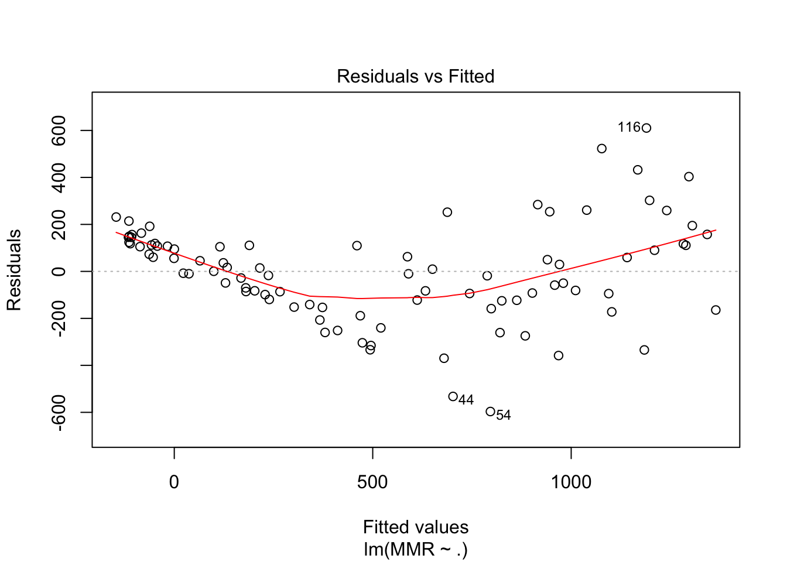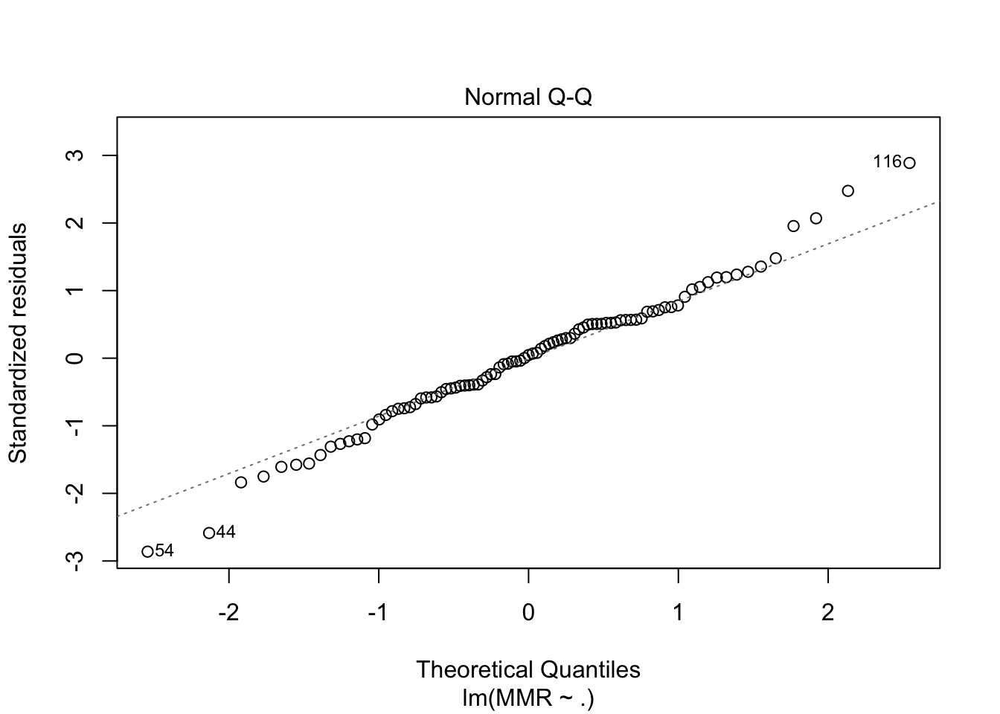
fit2 <- maternalmort %>%
mutate_at(.vars = c("physician", "nurses", "GNP", "MMR"),
function(x) log(x + 0.01)) %>%
select(-Country) %>%
lm(MMR~., data = .)
plot(fit2, which = c(1,2))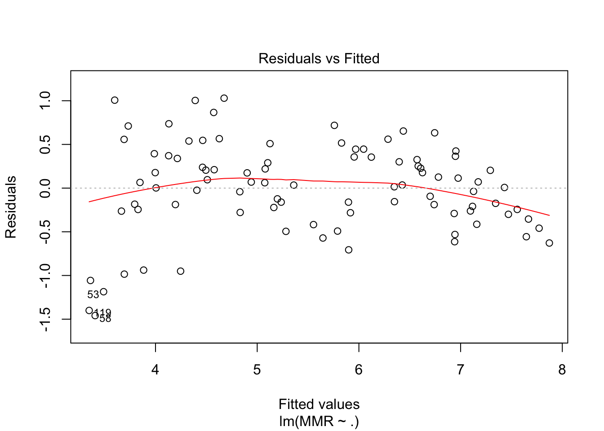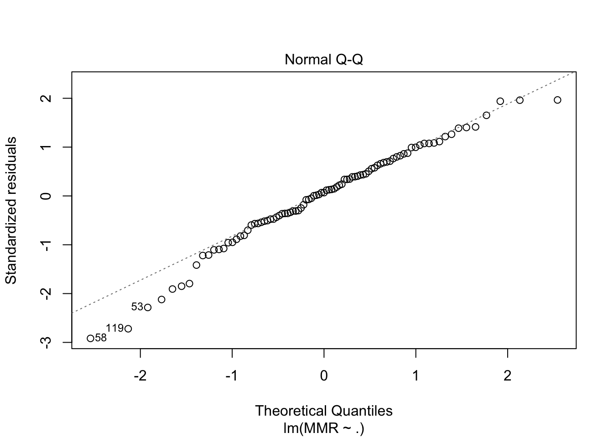
fit3 <- maternalmort %>%
mutate_at(.vars = c("MMR"),
function(x) log(x + 0.01)) %>%
select(-Country) %>%
lm(MMR~., data = .)
plot(fit3, which = c(1,2))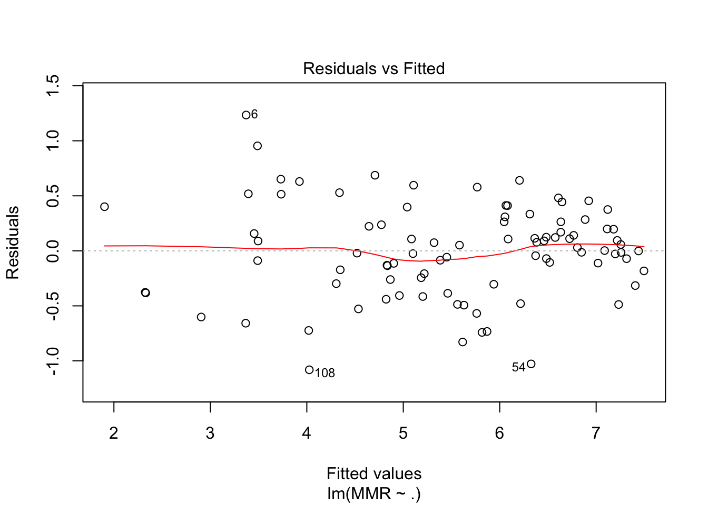
fit4 <- maternalmort %>%
mutate_at(.vars = c("MMR"),
function(x) log(x + 0.01)) %>%
select(-c(Country, femlit)) %>%
lm(MMR~., data = .)
plot(fit4, which = c(1,2)) 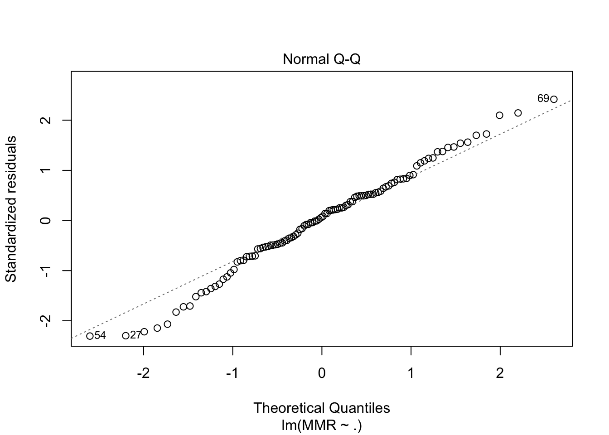
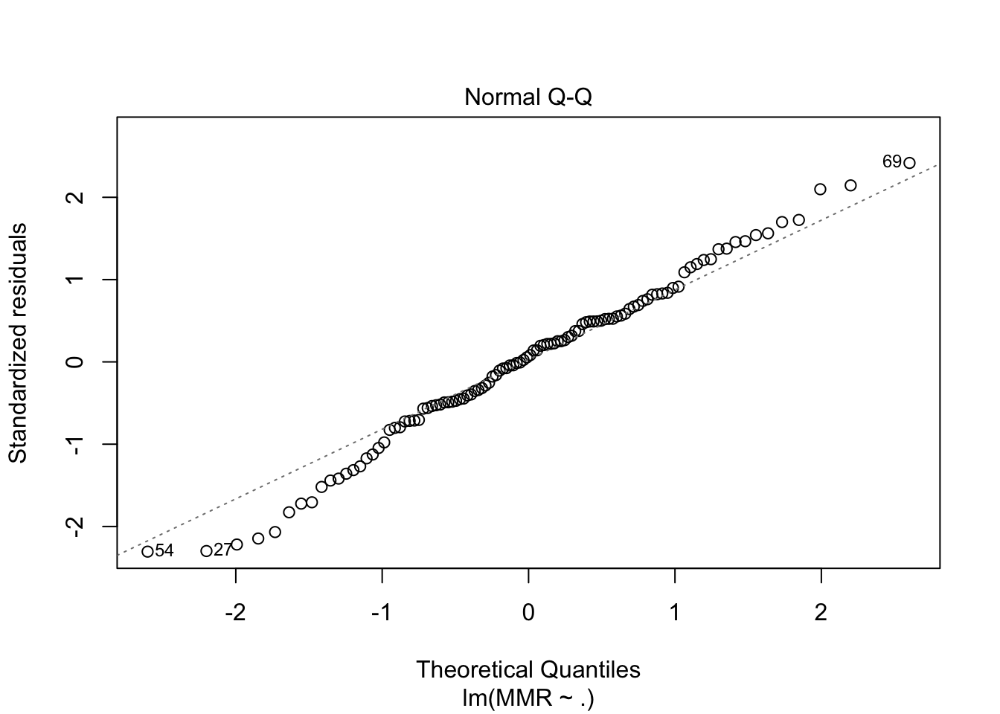
drop1(fit4, test = "F")Single term deletions
Model:
MMR ~ physician + nurses + GNP + attended
Df Sum of Sq RSS AIC F value Pr(>F)
<none> 25.385 -146.381
physician 1 7.150 32.535 -121.580 29.0115 4.565e-07 ***
nurses 1 0.085 25.470 -148.022 0.3431 0.5593
GNP 1 21.927 47.312 -81.140 88.9686 1.354e-15 ***
attended 1 34.486 59.871 -55.714 139.9265 < 2.2e-16 ***
---
Signif. codes: 0 '***' 0.001 '**' 0.01 '*' 0.05 '.' 0.1 ' ' 1fit5 <- maternalmort %>%
mutate_at(.vars = c("MMR"),
function(x) log(x + 0.01)) %>%
select(-c(Country, femlit, nurses)) %>%
lm(MMR~., data = .)
plot(fit5, which = c(1,2))
drop1(fit5, test = "F")Single term deletions
Model:
MMR ~ physician + GNP + attended
Df Sum of Sq RSS AIC F value Pr(>F)
<none> 26.920 -149.250
physician 1 10.945 37.864 -113.382 43.502 1.659e-09 ***
GNP 1 26.908 53.828 -74.335 106.952 < 2.2e-16 ***
attended 1 33.281 60.201 -61.915 132.283 < 2.2e-16 ***
---
Signif. codes: 0 '***' 0.001 '**' 0.01 '*' 0.05 '.' 0.1 ' ' 11/car::vif(fit5)physician GNP attended
0.4447664 0.6613548 0.4530873 Interpretation of results
Look at Countries with highest residual, which means high rates, that is unexplained by the model.
resids <- fit5$residuals
ordered_resids <- sort(resids, decreasing = T)
included_observations <- names(ordered_resids)
data.frame(residual = ordered_resids,
maternalmort[names(ordered_resids),]) residual Country physician nurses GNP MMR attended femlit
69 1.113069146 Japan 1.80 6.800 39640 18 100 NA
51 1.067351374 Germany 3.30 5.600 27510 22 99 NA
6 1.052036593 Argentina 2.70 2.100 8030 100 97 96
144 0.865275704 Uruguay 3.20 0.640 5170 85 96 98
71 0.789012445 Kazakhstan 3.60 9.000 1330 80 99 96
45 0.757207462 El Salvador 0.80 0.900 1610 300 87 70
126 0.718296284 Sudan 0.09 0.240 480 660 69 35
38 0.705648224 Cuba 3.60 6.100 1170 95 90 95
115 0.701652352 Senegal 0.10 0.260 600 1200 46 23
142 0.664098080 Ukraine 4.40 12.200 1630 50 100 97
110 0.639604948 Rumania 1.80 4.300 1480 130 100 95
21 0.638028247 Brazil 1.40 0.400 3640 220 81 83
151 0.580683795 Zambia 0.10 0.900 400 940 51 71
152 0.579279369 Zimbabwe 0.10 0.610 540 570 69 80
55 0.577919337 Guinea 0.10 0.430 550 1600 31 22
130 0.537043612 Switzerland 3.10 14.000 40630 6 99 NA
116 0.497468745 Sierra Leon 0.07 0.350 180 1800 25 18
17 0.467301051 Benin 0.10 0.580 370 990 45 26
141 0.438439274 Uganda 0.04 0.340 240 1200 38 50
25 0.419998176 Cambodia 0.10 1.000 270 900 47 22
26 0.414557174 Cameroon 0.10 0.640 650 550 64 52
134 0.391523647 Tanzania 0.03 0.220 120 770 53 57
113 0.384065205 South Afric 0.61 2.750 3160 230 82 82
70 0.356211483 Jordan 1.60 3.000 1510 150 87 79
49 0.336182249 France 2.80 5.700 24990 15 99 NA
114 0.302266526 Saudi Arabi 1.40 0.200 6180 130 82 50
92 0.290068913 Mozambique 0.02 0.260 80 1500 25 23
23 0.288029677 Burkina 0.03 0.250 230 930 42 9
36 0.285252701 Cote d'Ivoi 0.10 0.400 660 810 45 30
14 0.279362455 Belarus 4.10 11.400 2070 37 100 97
19 0.277879185 Bolivia 0.50 0.900 800 650 47 76
15 0.276141597 Belgium 3.70 0.370 24710 10 100 NA
87 0.274492451 Mauritania 0.10 0.500 460 930 40 26
136 0.272138959 Togo 0.10 0.400 310 640 54 37
73 0.270084243 Korean Rep. 1.20 6.700 9700 70 98 97
57 0.260159551 Honduras 0.40 1.200 600 220 88 73
94 0.251001887 Namibia 0.20 3.200 2000 370 68 NA
93 0.249562379 Mynamar 0.10 0.400 220 580 57 78
40 0.204947002 Denmark 2.90 6.700 29890 9 100 NA
81 0.203738431 Lithuania 4.00 9.700 1900 36 100 98
112 0.180603328 Rwanda 0.02 0.034 180 1300 26 52
90 0.180054616 Mongolia 2.70 NA 310 65 99 77
18 0.171473569 Bhutan 0.20 0.500 420 1600 15 28
80 0.136248786 Libya 1.00 2.900 269 220 76 63
139 0.134129903 Turkey 1.10 1.500 2780 180 76 72
145 0.129025681 USA 2.50 7.000 26980 12 99 NA
52 0.127929948 Ghana 0.04 0.360 390 740 44 54
84 0.126980434 Malawi 0.02 0.060 170 560 55 42
28 0.123577525 Central Afr 0.04 0.100 340 700 46 52
99 0.107958020 Nigeria 0.15 0.900 260 1000 31 47
148 0.107754470 Vietnam 0.40 2.300 219 160 95 91
82 0.081584905 Madagasca 0.10 0.400 230 490 57 73
85 0.080482609 Mali 0.10 0.250 250 1200 24 23
4 0.076400972 Angola 0.07 16.400 700 1500 15 29
100 0.036627827 Norway 3.30 16.400 31250 6 100 NA
29 0.028086275 Chad 0.03 0.027 180 1500 15 35
1 0.022510429 Afghanistan 0.10 0.100 280 1700 9 15
24 0.018678477 Burundi 0.10 0.430 160 1300 19 23
149 0.017566096 Yemen 0.10 8.200 260 1400 16 26
91 0.006459144 Morocco 0.40 1.800 1110 610 40 31
9 0.005622820 Austria 2.60 8.400 26890 10 100 NA
42 -0.007648642 Dominican R 1.10 0.800 1460 110 92 82
96 -0.035098395 Netherlands 2.50 8.500 24000 12 100 NA
137 -0.045968645 Trinidad 0.70 2.800 3770 90 98 97
47 -0.073256209 Ethiopia 0.03 0.070 100 1400 14 25
59 -0.087104962 Hungary 3.40 7.000 4120 30 99 98
120 -0.119122863 Sri Lanka 0.14 0.710 700 140 94 87
62 -0.121864087 Indonesia 0.20 1.100 980 650 36 78
78 -0.131755707 Lebanon 1.30 NA 2660 300 45 90
3 -0.144149199 Algeria 0.80 3.200 1600 160 77 49
106 -0.144676140 Peru 1.00 2.600 2310 280 52 83
95 -0.162215528 Nepal 0.10 0.200 200 1500 7 14
79 -0.164640616 Lehsotho 0.00 0.500 770 610 40 62
56 -0.183477809 Hiaiti 0.10 0.400 250 1000 21 42
98 -0.192487320 Niger 0.03 0.200 220 1200 15 7
30 -0.197038194 Chile 1.10 2.500 4160 65 98 95
103 -0.213582885 Panama 1.60 2.400 2750 55 100 90
88 -0.221791162 Mexico 1.30 1.900 3320 110 77 87
104 -0.224832667 Papua New G 0.10 1.400 1160 930 20 63
135 -0.235006891 Thailand 0.20 1.900 2740 200 71 92
31 -0.239293302 China 1.60 1.100 620 95 84 73
147 -0.259805635 Venzuela 1.60 2.700 3020 120 69 90
32 -0.264551038 Columbia 1.10 1.400 1910 100 85 91
48 -0.266988204 Finland 2.70 12.000 20580 11 100 NA
2 -0.281955992 Albania 1.40 4.700 670 65 99 NA
43 -0.314721427 Ecuador 1.50 1.600 1390 150 64 88
138 -0.361745384 Tunisia 0.60 2.800 1820 170 69 55
129 -0.365648195 Sweden 3.10 10.100 23750 7 100 NA
64 -0.368808505 Iraq 0.20 0.200 1036 310 54 45
83 -0.376838935 Malaysia 0.40 1.560 3890 80 94 78
131 -0.394048580 Syrian A. 0.80 1.000 112 180 67 56
68 -0.413473517 Jamaica 0.50 2.000 1510 120 82 89
117 -0.452458229 Singapore 1.40 3.500 26730 10 100 86
12 -0.499814288 Bangladesh 0.20 0.300 240 850 14 26
35 -0.525018438 Costa Rica 1.30 2.200 2610 55 93 95
107 -0.534219675 Philippines 0.10 0.310 1050 280 53 94
44 -0.605981670 Egypt 1.80 2.200 790 170 46 39
105 -0.624305772 Paraguay 0.30 1.300 1690 160 66 91
63 -0.647339103 Iran 0.32 0.350 1033 120 77 59
22 -0.688024961 Bulgaria 3.50 8.500 1330 27 86 97
97 -0.695215511 Nicaragua 0.70 1.200 380 160 61 67
53 -0.752966476 Greece 4.00 3.600 8210 10 97 93
119 -0.754316656 Spain 4.10 4.300 13580 7 96 93
8 -0.773469177 Australia 2.20 8.500 18720 9 100 NA
109 -0.850582473 Portugal 2.90 3.200 9740 15 90 81
143 -1.035974592 UK 1.50 3.000 18700 9 100 NA
108 -1.039556665 Poland 2.30 5.900 2790 19 99 98
54 -1.080679426 Guatamala 0.80 1.500 1340 200 35 49
58 -1.086157536 Hong Kong 1.30 5.500 22990 7 100 88
102 -1.153942260 Pakistan 0.50 NA 460 340 19 24
27 -1.163216229 Canada 2.20 11.200 19380 6 99 NAConclusions
Case Study 4, Spider web
Some biologists were interested in the effect of temperature on the size of the cobweb from the spider Achaearanea tepidariorum. They collected the following data (see the file cobweb.sav or cobweb.RData):
Temperature (in oC) log10(cobweb weight/spider weight) 10 -2.81508 -2.74254 -2.69473 -2.58087 -2.30309 -2.82513 -2.63073 -2.10109 15 -2.23378 -2.85680 -2.31367 -2.93023 -2.69093 -2.56165 -2.61604 -2.97926 20 -1.97753 -1.98788 -1.92117 -2.42344 -2.53879 -2.29301 -2.19948 -2.27348 -2.13957 -2.43604 25 -2.02078 -2.54437 -2.41178 -1.95839 -3.02343 -2.63536 -2.63536 -2.75174 -1.99863
Analyze these data and give possible explanations for the transformation of the dependent variable.
Research objective
Research question
Is the size of the cobweb of the Achaearanea tepiariorum dependant on the temperature?
Variables of interest
- determinant: Temperature
- outcome: Size of cobweb (= cobweb weight/spider weight)
- possible confounders:
Data exploration
load(epistats::fromParentDir("data/cobweb.RData"))
str(cobweb)List of 2
$ TEMP : num [1:35] 10 10 10 10 10 10 10 10 15 15 ...
$ LGWEIGHT: num [1:35] -2.82 -2.74 -2.69 -2.58 -2.3 ...
- attr(*, "label.table")=List of 2
..$ TEMP : NULL
..$ LGWEIGHT: NULLData curation
Pairs plot
boxplot(LGWEIGHT~TEMP, data = cobweb)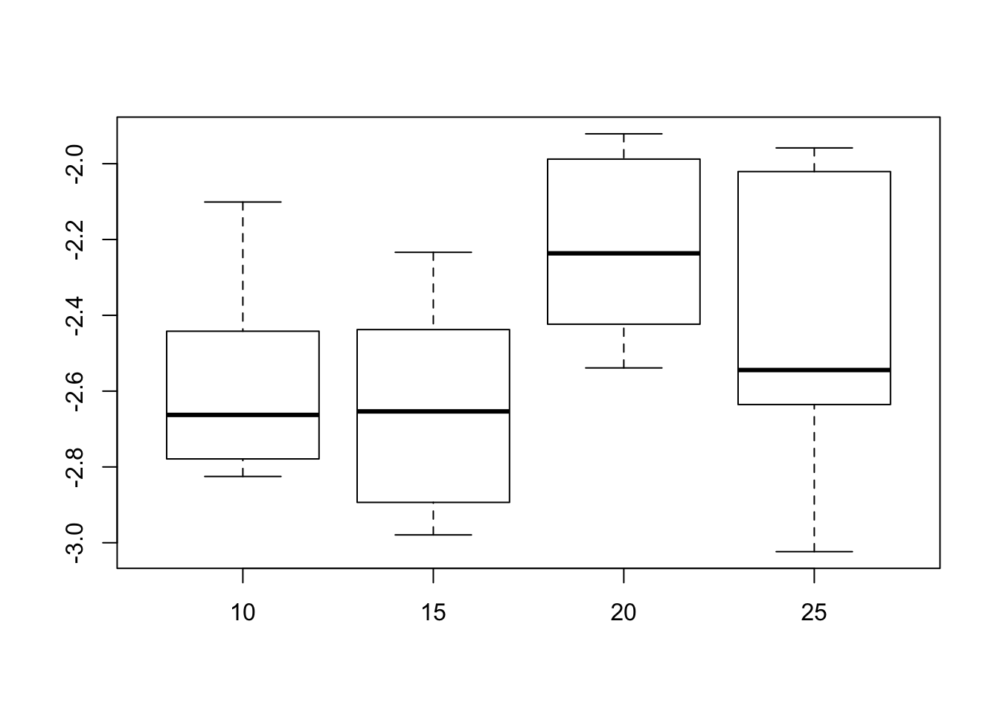
From the boxplots, it seems that LGWEIGHT increases with temperature. Also, the variance of LGWEIGHT seems to increase a little with temperature.
Analysis plan
Since we have a continous outcome and one categorical variable, we can analyse this with ANOVA (or equivalently: simple linear regression). We can treat temperature as a continous variable, or as a categorical one. Since we expect a monotonous relationship on the range of tested temperatures, we will use it as a continous variable, as this keeps in the information that \(temp = 10 < 15 < 20 < 25\)
Crude analysis
fit <- lm(LGWEIGHT~TEMP, data = cobweb)
summary(fit)
Call:
lm(formula = LGWEIGHT ~ TEMP, data = cobweb)
Residuals:
Min 1Q Median 3Q Max
-0.68955 -0.21504 -0.03525 0.27801 0.49991
Coefficients:
Estimate Std. Error t value Pr(>|t|)
(Intercept) -2.769883 0.178248 -15.539 <2e-16 ***
TEMP 0.017440 0.009537 1.829 0.0765 .
---
Signif. codes: 0 '***' 0.001 '**' 0.01 '*' 0.05 '.' 0.1 ' ' 1
Residual standard error: 0.3111 on 33 degrees of freedom
Multiple R-squared: 0.092, Adjusted R-squared: 0.06449
F-statistic: 3.344 on 1 and 33 DF, p-value: 0.07651plot(fit, which = c(1,2))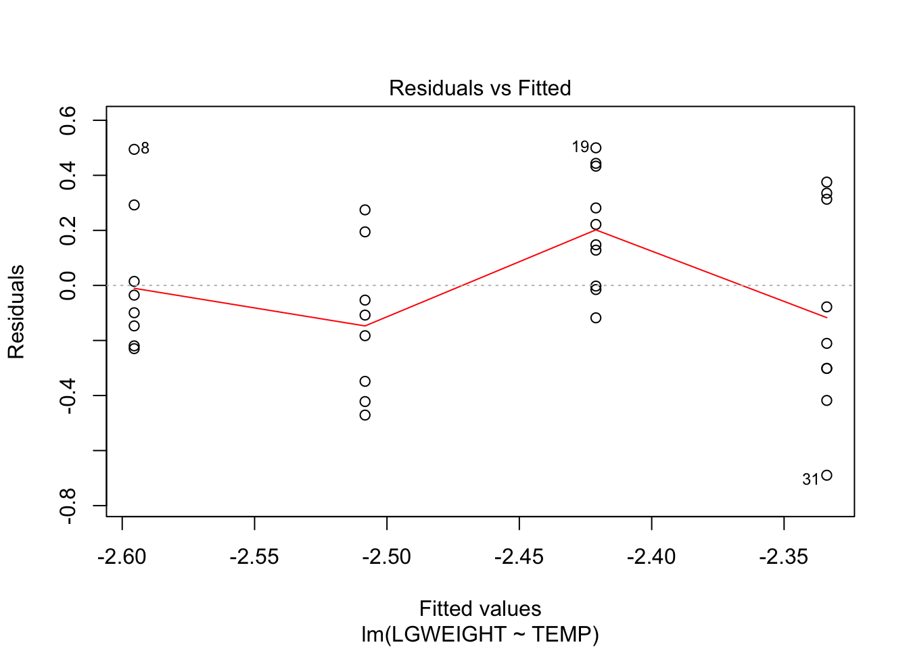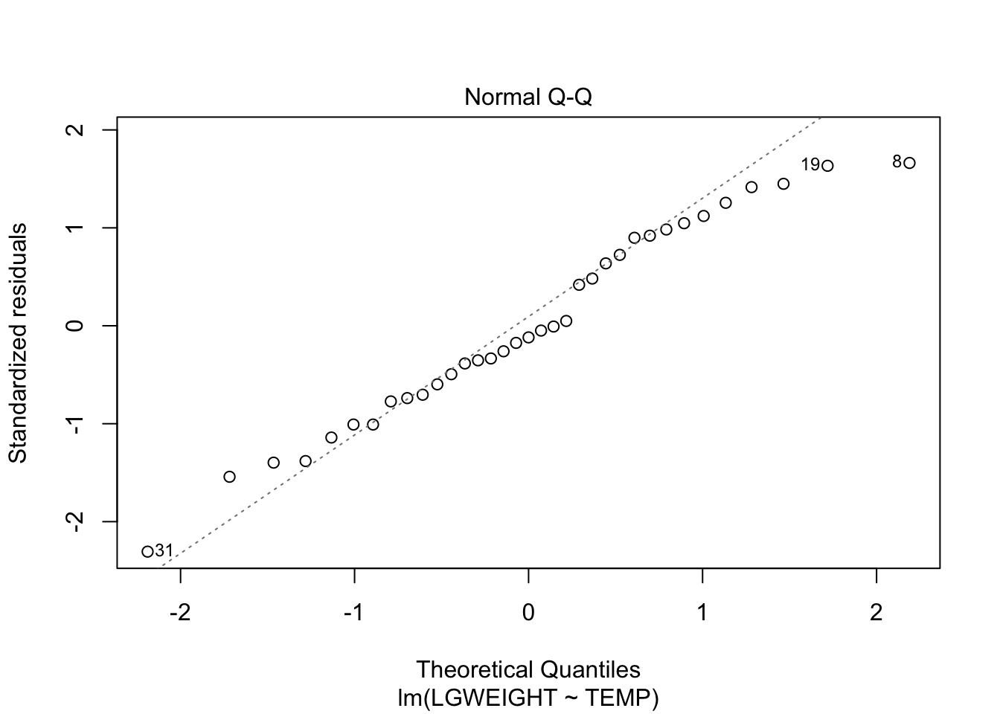
cor.test(~LGWEIGHT+TEMP, data = cobweb, method = "spearman")Warning in cor.test.default(x = c(-2.81508, -2.74254, -2.69473, -2.58087, :
Cannot compute exact p-value with ties
Spearman's rank correlation rho
data: LGWEIGHT and TEMP
S = 4961.6, p-value = 0.07472
alternative hypothesis: true rho is not equal to 0
sample estimates:
rho
0.3050958 From the analysis, it looks like there is
fit_anova <- aov(LGWEIGHT~factor(TEMP), data = cobweb)
summary(fit_anova) Df Sum Sq Mean Sq F value Pr(>F)
factor(TEMP) 3 0.9939 0.3313 4.068 0.0151 *
Residuals 31 2.5246 0.0814
---
Signif. codes: 0 '***' 0.001 '**' 0.01 '*' 0.05 '.' 0.1 ' ' 1TukeyHSD(fit_anova) Tukey multiple comparisons of means
95% family-wise confidence level
Fit: aov(formula = LGWEIGHT ~ factor(TEMP), data = cobweb)
$`factor(TEMP)`
diff lwr upr p adj
15-10 -0.0611375 -0.448403316 0.3261283 0.9731521
20-10 0.3676185 0.000225888 0.7350111 0.0498135
25-10 0.1444531 -0.231901669 0.5208078 0.7265602
20-15 0.4287560 0.061363388 0.7961486 0.0171924
25-15 0.2055906 -0.170764169 0.5819453 0.4597789
25-20 -0.2231654 -0.579038171 0.1327073 0.3398488Multiple regression
Interpretation of results
Conclusions
Case Study 5, immediate vs sustained release
Immediate release medications quickly liberate their drug content into the body, with the maximum concentration reached in a short time followed by a rapid decline in concentration. Sustained release medications, on the other hand, take longer to reach maximum concentration in the body and stay active for longer periods of time.
A study of two such pain relief medications compared immediate release codeine (IRC) with sustained release codeine (SRC). Thirteen healthy patients were randomly assigned to one of the two types of codeine and treated for 2.5 days. After a 7-day wash-out period, the same patients were given the other type of codeine. Measurements include the maximum concentration in ng/mL, the time to maximum concentration in hours, the total amount of drug available over the life of the treatment in (ng*mL)/hr and the age of the patient. These data are shown below (see also the file codeine.sav or codeine.RData.
Concentration Time Total amountAge IRC SRC IRC SRC IRC SRC 33 181.8 195.7 0.5 2.0 1091.3 1308.5 40 466.9 167.0 1.0 3.0 1064.5 1494.2 41 136.0 217.3 0.5 3.0 1281.1 1382.2 43 221.3 375.7 1.5 4.5 1921.4 1978.3 25 195.1 285.7 0.5 2.0 1649.9 2004.6 30 112.7 177.2 1.0 2.0 1423.6 * 24 84.2 220.3 2.0 1.5 1308.4 1211.1 44 78.5 243.5 1.0 3.0 1192.1 1002.4 42 85.9 141.6 1.5 1.5 766.2 866.6 33 85.3 127.2 2.0 4.5 978.6 1345.8 38 217.2 345.2 0.5 1.5 1618.9 979.2 39 49.7 112.1 1.5 1.0 582.9 576.3 43 190.0 223.4 0.5 1.0 972.1 999.1
The research questions are: are there any differences on these three parameters between immediate release codeine and sustained release codeine? Are these differences dependent on age?
Research objective
Assume random order.
Research question
Variables of interest
- determinant:
- outcome:
- possible confounders:
Data exploration
load(epistats::fromParentDir("data/codeine.RData"))
str(codeine)List of 7
$ AGE : num [1:13] 33 40 41 43 25 30 24 44 42 33 ...
$ CIRC: num [1:13] 182 467 136 221 195 ...
$ CSRC: num [1:13] 196 167 217 376 286 ...
$ TIRC: num [1:13] 0.5 1 0.5 1.5 0.5 1 2 1 1.5 2 ...
$ TSRC: num [1:13] 2 3 3 4.5 2 2 1.5 3 1.5 4.5 ...
$ AIRC: num [1:13] 1091 1064 1281 1921 1650 ...
$ ASRC: num [1:13] 1308 1494 1382 1978 2005 ...
- attr(*, "label.table")=List of 7
..$ AGE : NULL
..$ CIRC: NULL
..$ CSRC: NULL
..$ TIRC: NULL
..$ TSRC: NULL
..$ AIRC: NULL
..$ ASRC: NULLcodeine <- as.data.frame(codeine)Data curation
Melt into easier format
codein_melted <- data.table::melt(codeine, id.vars = "AGE")Pairs plot
Analysis plan
We will use the parametric tests. Too little data to check assumptions, too little data for power for non-parametric tests.
Crude analysis
t.test(codeine)
One Sample t-test
data: codeine
t = 6.7874, df = 89, p-value = 1.227e-09
alternative hypothesis: true mean is not equal to 0
95 percent confidence interval:
286.4803 523.6375
sample estimates:
mean of x
405.0589 Multiple regression
Dependent on age:
Difference ~ age (dependent -> regression, associated -> correlation)
Interpretation of results
Conclusions
General structure
(for later take heading levels up 1 step) #### Case description
Research objective
Research question
Variables of interest
- determinant:
- outcome:
- possible confounders:
Data exploration
Data curation
Pairs plot
Analysis plan
Crude analysis
Multiple regression
Interpretation of results
Conclusions
Session information
sessionInfo()R version 3.3.2 (2016-10-31)
Platform: x86_64-apple-darwin13.4.0 (64-bit)
Running under: macOS Sierra 10.12.6
locale:
[1] en_US.UTF-8/en_US.UTF-8/en_US.UTF-8/C/en_US.UTF-8/en_US.UTF-8
attached base packages:
[1] stats graphics grDevices utils datasets methods base
other attached packages:
[1] survival_2.41-3 ggplot2_2.2.1 bindrcpp_0.2 dplyr_0.7.1
[5] GGally_1.3.1
loaded via a namespace (and not attached):
[1] Rcpp_0.12.11 nloptr_1.0.4 RColorBrewer_1.1-2
[4] git2r_0.19.0 plyr_1.8.4 bindr_0.1
[7] epistats_0.1.0 tools_3.3.2 lme4_1.1-13
[10] digest_0.6.12 nlme_3.1-131 evaluate_0.10.1
[13] tibble_1.3.3 gtable_0.2.0 lattice_0.20-35
[16] mgcv_1.8-17 pkgconfig_2.0.1 rlang_0.1.1
[19] Matrix_1.2-10 parallel_3.3.2 yaml_2.1.14
[22] SparseM_1.77 stringr_1.2.0 knitr_1.17
[25] MatrixModels_0.4-1 nnet_7.3-12 rprojroot_1.2
[28] lmtest_0.9-35 grid_3.3.2 data.table_1.10.4
[31] reshape_0.8.6 glue_1.1.1 R6_2.2.2
[34] rmarkdown_1.6 minqa_1.2.4 car_2.1-5
[37] reshape2_1.4.2 magrittr_1.5 MASS_7.3-47
[40] splines_3.3.2 backports_1.1.0 scales_0.4.1
[43] htmltools_0.3.6 pbkrtest_0.4-7 assertthat_0.2.0
[46] colorspace_1.3-2 quantreg_5.33 labeling_0.3
[49] stringi_1.1.5 lazyeval_0.2.0 munsell_0.4.3
[52] zoo_1.8-0 This R Markdown site was created with workflowr